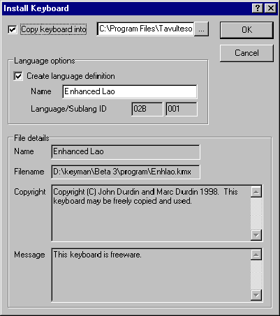
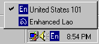

Tavultesoft Keyboard Manager
User’s Guide and Reference
VERSION 4.0
Tavultesoft
This documentation may be freely copied, but the copyright notice must not be altered or removed. No part of this documentation may be modified or edited. Tavultesoft holds no responsibility for any errors in this documentation or the use of its software.
© 1999 Marc Durdin / Tavultesoft. All rights reserved.
This documentation was created in MS Office 97. It is available online at http://www.tavultesoft.com/keyman/docs/.
Microsoft, Word for Windows, Access, and Excel are registered trademarks, and Windows is a trademark of Microsoft Corporation.
Ami Pro is a registered trademark of Lotus Corp.
Compaq is a registered trademark of Compaq Computer Corporation.
Any other trademarks referred to remain the property of their respective holders.
Chapter 1 Introduction
*New Features in Tavultesoft Keyboard Manager 4.0
*Documentation included in this distribution
*Contacting Tavultesoft
*Registering Keyman
*Chapter 2
Starting to use Keyman *The Keyman Window
*Installing new keyboards
*The Tavultesoft keyboard repository
*Using Keyman keyboards in Windows
*Differences between 95 and NT
*Advanced options
*Chapter 3
Writing a Simple Keyboard Program *Overview
*Arranging the Layout on the Keyboard
*Writing the Keyboard Program
*Comments and Blank Lines
*The Header
*The Rules
*Chapter 4
Further Programming *Multiple Groups
*The use Statement
*The return Statement
*The match and nomatch Rules
*Summing Up
*Constraints
*Groups Without the "using keys" Keyword
*Virtual Keys
*Other Features
*Other Header Statements
*nul In the Context
*The outs Statement
*Long Rules
*Welcome to the Tavultesoft Keyboard Manager. With the Tavultesoft Keyboard Manager (Keyman), it becomes practical to enter and edit documents that use languages and scripts other than English, for a wide variety of Windows application programs such as word processors, spreadsheets, databases, and desktop publishers.
Keyman has been developed with particular reference to the languages of South-East Asia and their scripts, but it can be readily adapted for many other languages. Keyman will allow you to mix many languages in one document, in your favorite word processor.
The most important feature of Keyman is the keyboard definition language that lets you develop your own keyboard layouts for just about any language.
This manual will guide you through the basics of using Keyman and writing keyboards for it, and explain the more advanced options that Keyman gives you. Reference information is given in the Reference Documentation.
New Features in Tavultesoft Keyboard Manager 4.0
Keyman 4.0 has been totally rewritten from the ground up to support Windows 95, 98 and NT 4. This means that this version of Keyman will not run under Windows 3.1 or Windows for Workgroups. There are a number of new features:
Documentation included in this distribution
The following documents should be included with your Keyman distribution:
Other documentation may become available and can be downloaded from http://www.tavultesoft.com/keyman/docs/.
The Tavultesoft website, http://www.tavultesoft.com/ has support information and contact details.
The evaluation version of Keyman is licensed for 30 days use only. If you choose not to register Keyman after that time, you must uninstall Keyman from your computer. The evaluation version is also restricted in the following ways:
After you have registered Keyman, you will receive a registration code. From the Keyman window, select About and then click on Register to enter this registration code.
More details on Keyman registration can be found in LICENSE.TXT.
Chapter 2
The Keyman distribution should be a single executable file keyman40.exe. Run this program to install Keyman. The setup program is straightforward and you should have no troubles installing. Note: If you are installing Keyman on Windows NT, you should be logged in as Administrator, as Keyman will need to modify the registry to install.
After installation, you can start Keyman from the Start Menu. If you have the unregistered version, you will have to wait several seconds for the initial splash screen to disappear; otherwise, the window will only appear briefly before Keyman starts.
In a new installation, the main Keyman window should appear. If it doesn't, or you have already been using Keyman, you can make it appear in the following different ways:
The main window will look like the picture below. If you are running on Windows NT, you will not have the Define Languages option. See the section Differences between 95 and NT for more information.

The main Keyman window
The two options, Start on boot and Hide on startup are fairly self-explanatory, and are the only options available in Keyman 4.0. If you click the Hide button, you can display Keyman with either of the two methods listed above.
The initial Keyman distribution that you received will not have any keyboards included. You can download Keyman keyboards from the Internet. Keyman 4.0 keyboards have the file extension .kmx. Once downloaded, you should click the Install Keyboard... button in Keyman and select the keyboard you downloaded. The following dialog box will appear.

Usually, you will want to copy the keyboard into the Keyman directory so that you won't accidentally delete it. If the language the keyboard is designed for is not already defined, you can define it in this dialog box; usually the given name is correct and you shouldn't modify it.
After you click OK, the keyboard will be installed ready for use.
The Tavultesoft keyboard repository
Tavultesoft has a web page where keyboards have been collected and placed in one easy location: http://www.tavultesoft.com/keyman/keyboards/. It is a good idea to look there first if you are trying to find a keyboard. Other places where Keyman keyboards may be found are also listed on this page.
Using Keyman keyboards in Windows
Using the Keyman keyboards in Windows is simple: simply click the Keyman icon in the task bar, and select the appropriate language.
The Keyman icon will be located at the bottom right of the screen, in the following Window (Note: the icons you see may be different to the ones here):

The Keyman icon changes to show your current Keyboard. The standard English icon is  . Other languages may use a two letter code like this, or a different symbol altogether. When you left-click the icon, a menu will appear, looking like this:
. Other languages may use a two letter code like this, or a different symbol altogether. When you left-click the icon, a menu will appear, looking like this:

Simply click the language you wish to use. You may need to select an appropriate font in your application as well.
You can also change keyboards by pressing Left Alt+Shift or Ctrl+Shift. You can select the hotkey combination from the standard Keyboard Control Panel applet. See Advanced options for more information on this.
There are several minor differences between Windows 95 and NT. The primary difference is that under NT, you cannot fully define your own languages. Keyman will let you type in those languages, but they will not be visible to Control Panel. This is unfortunately a limitation of the way in which Windows NT works. The second, minor, difference is that Microsoft-defined Windows NT keyboards have a .dll extension instead of a .kbd extension. Note that this does not refer to Keyman keyboards, which always have a .kmx extension.
Because of the way Keyman integrates into the Windows language interface, you can also use the Windows 95 Keyboard Control Panel applet to change many of your keyboard options. The most important option is the ability to change the language a Keyman keyboard is associated with. To do this, install the keyboard in the normal way, and then in the Keyboard Control Panel, select Language Properties to change the default keyboard associations. However this is not usually recommended, as it will reduce the usefulness of the Windows multi-language interface.
Writing a Simple Keyboard Program
There are two main steps to writing a keyboard program. The first step is to arrange the layout of the characters on the keyboard. Then, you enter the keyboard program according to your layout.
This chapter shows you the basic steps in writing a keyboard program; we will be using a simplified French keyboard as an example to follow through.
It is important to remember that a Keyman keyboard has a source file and a compiled file. The source file has the extension .kmn. The compiled file has the extension .kmx. You cannot installed a source file into Keyman 4.0, and you cannot edit a compiled file. See the section Compiling Keyboards for information on how to convert a source file into a compiled file.
You will be designing a simplified French keyboard for people who don’t know the standard French keyboard layout; you will have to go through both steps mentioned above. This French keyboard (Quick French) doesn’t follow the standard French layout; instead, it uses a basic English keyboard with some deadkeys to define vowel diacritics and other French characters needed.
You will need to know the character codes in the font that goes with this keyboard (for Quick French, Times New Roman and Arial work fine); the characters you will be using may be upper-ascii. If you do not have a font for the language you will be working with, you will need to obtain or create one; Keyman does not do anything about fonts.
Arranging the Layout on the Keyboard
First of all, you have to know what codes are used for the characters you are mapping with your keyboard program. (You can use the Character Map application that is provided with Windows to help you find these codes.)
For the Quick French keyboard, you will need all the vowels with different diacritics, some French symbols, and c-cedilla (upper and lower case); the codes needed are listed below, along with some others that are used by other European languages:
|
Char |
Code |
Char |
Code |
Char |
Code |
Char |
Code |
Char |
Code |
Char |
Code |
|
À |
192 |
È |
200 |
Ì |
204 |
Ò |
210 |
Ù |
217 |
||
|
à |
224 |
è |
232 |
ì |
236 |
ò |
242 |
ù |
249 |
||
|
Á |
193 |
É |
201 |
Í |
205 |
Ó |
211 |
Ú |
218 |
Ý |
221 |
|
á |
225 |
é |
233 |
í |
237 |
ó |
243 |
ú |
250 |
ý |
253 |
|
 |
194 |
Ê |
202 |
Î |
206 |
Ô |
212 |
Û |
219 |
Ç |
199 |
|
â |
226 |
ê |
234 |
î |
238 |
ô |
244 |
û |
251 |
ç |
254 |
|
Ä |
196 |
Ë |
203 |
Ï |
207 |
Ö |
214 |
Ü |
220 |
« |
171 |
|
ä |
228 |
ë |
235 |
ï |
239 |
ö |
246 |
ü |
252 |
» |
187 |
Now that you know the character codes needed, you must decide how you want to key them. For the purposes of this example, the codes will be keyed according to the following table:
|
Code |
Keys to create code |
|
à, À, ... |
backquote (`), followed by the corresponding vowel key |
|
á, Á, ... |
quote ('), followed by the corresponding vowel key |
|
â, Â, ... |
caret (^, shift+6), followed by the corresponding vowel key |
|
ä, Ä, ... |
double quote ("), followed by the corresponding vowel key |
|
ç, Ç |
quote ('), followed by small or capital C. |
|
«,» |
double less-than symbol (<<) or double more-than symbol (>>) |
The basic design of the keyboard is done. There will be more to come, but first you are going to write the first version of the keyboard program.
Before you start this section, start a text editor (such as Windows Notepad), and begin editing a new file. The Tavultesoft Integrated Keyboard Editor has been designed for this purpose and works closely with Keyman (see chapter 6). (DOS text editors are okay, too, but not quite as convenient.)
A keyboard program is divided into two sections: the header, and the rules. The header lets you define the name of the keyboard, hotkeys, and other general settings. The rules are divided into groups where you define how the keyboard responds to keystrokes. Every keyboard program must have both of these sections. A keyboard program normally has the extension .KMN and is an ANSI text file.
A Keyboard Program can have a comment at any point. The comment is identified by a letter ‘c’, with a space on either side (unless the comment is at the start of the line, in which case you only need a space on the right). The end of the line marks the end of the comment.
Blank lines are ignored by Keyman; you can have them anywhere in a keyboard program.
Examples:
c This is a comment
... c This is a comment, also
It is a good idea to use comments to document your keyboard program. They will help you remember why you did something in a particular way, and they will also help other people understand the program.
Add some comments to the start of the Quick French keyboard program, in your text editor, describing who wrote it, when it was written, and anything else needed, such as instructions on how to use the keyboard (from the tables above). You could even add a copyright notice, for a keyboard that uses complex algorithms, for example.
Example:
c
c Simplified French Keyboard Program for Keyman 3.1
c
c This keyboard program uses a simplified set of keys
c for typing French, especially for those who don’t know
c the standard French keyboard.
c
c NOTE: This keyboard was created from the Keyman keyboard
c programming tutorial.
c
c Written by Anybody, March, 1999
c
The header is easy to create; it consists of statements that help Keyman identify the keyboard and set default options for it. Each statement in the header must be on a separate line and is usually written with capital letters, although that is not required. Keeping the statements in the header in upper case helps you identify them easily, and keeps them consistent with keyboard programs other people might write.
Five statements are required in the header. Some other optional statements are described in later chapters. The required statements are:
NAME, BITMAP, LANGUAGE, VERSION, and begin. The begin statement is usually written in lower case.The
NAME statement tells Keyman the long descriptive name of the keyboard, which can be as long as eighty characters. This name is used in the Keyman menu, and in the Options dialog box. The name must be enclosed in double quotes ("). Any character except the double quote is legal within the name.For our Quick French keyboard, we will use the name "Quick French." Add the
NAME statement to the keyboard program, as follows:NAME "Quick French"
You can give your keyboard program a different name, if you wish.
The
BITMAP statement tells Keyman which bitmap file is used for the keyboard icon. The bitmap uses the standard Windows .BMP format; you can create them using Paintbrush. You should make it 16x16 pixels, as that will be the final display size. The bitmap can be monochrome or color, but the final .BMP file must be less than 64 kilobytes. The BITMAP statement accepts the name of the bitmap file, in upper or lower case, with or without the .BMP extension included. The file name is not enclosed in quotes.Add the
BITMAP statement, as follows:BITMAP FrKey
The
VERSION statement is the simplest statement; for a keyboard intended for version 4.0 of Keyman, simply add 4.0 to the end of the line.The Quick French keyboard is intended to be used in Keyman 4.0. Therefore, add the following line to your program:
VERSION 4.0
The LANGUAGE and LAYOUT Statements
Conversely, the
LANGUAGE statement is the most difficult header statement to understand. For the purposes of this example, we will just give you the complete statement. You will need a LAYOUT statement as well, as this is an alternative to the standard French keyboard. These statements are described fully in the Language Reference.LANGUAGE x0c, x01 c French (France)
LAYOUT x01
The
begin statement tells Keyman which group to start processing with when it receives a keystroke. Later on you will learn how to use multiple groups to process keystrokes, but at present all you need to know is to include this line in the header.For the Quick French keyboard, add the following line to tell Keyman to start in the
Main group:begin > use(Main)
Those five statements are the only ones required in the header. You can add comments to the ends of the statements to help other people understand them.
Your Quick French keyboard should so far look like this:
c
c Simplified French Keyboard Program for Keyman 4.0
c
c This keyboard program uses a simplified set of keys
c for typing French, especially for those who don’t know the
c standard French keyboard.
c
c NOTE: This keyboard was created from the Keyman keyboard
c programming tutorial.
c
c Written by Anybody, March, 1999
c
NAME "Quick French"
BITMAP FrKey
LANGUAGE x0c, x01
VERSION 4.0
begin > use(Main)
Before we start on the rules, we will define some terms:
|
Term |
Definition |
|
rule |
A rule tells Keyman what output is associated with a keystroke under certain conditions; it is divided into three parts: the context, key, and output |
|
context |
The context specifies the conditions under which the rule is acted upon. It is compared with the most recent characters output. |
|
key |
The key is the code for a single keystroke that the rule acts on. |
|
output |
The output is the part of the rule that defines what characters are to be put on the screen when the rule’s conditions are met. |
The first thing to do is to define the group. There are two types of groups: one that processes the key pressed and the context and another that does further processing using only the context. For most purposes, the first type of group will do all you need. The group of rules ends at the next
group statement or at the end of the file if there are no more group statements. We said in the section about the header that the group to be processed first would be identified by the begin statement.The
begin statment defined the first group as Main. In your program, add a new line:group(Main) using keys
using keys
tells Keyman that the group processes keystrokes as well as context. If you leave this out, the keystrokes will be ignored.The simplest rule you can have tells Keyman to convert one key into another. A rule of this sort is represented in Keyman in the following way:
+ key > output
where
key is the key to be translated, and output is the character to be output. The plus sign (+), is required, and shows you that the next character in the string is the keystroke. Note: This has changed from Keyman 3.x, where the plus sign was optional. More complex rules can have characters before the plus sign (the context). The right angle-bracket (>) tells Keyman which part of the rule is output and which part is the key and context. Single characters can be represented in several different ways; the possible methods are listed below:|
Representation |
Example of the character "x" |
|
Inside single quotes |
'x' |
|
Inside double quotes |
"x" |
|
As a decimal number (base-10) |
d120 |
|
As a hexadecimal number (base-16) |
x78 |
|
As an octal number (base-8) |
170 |
These different ways of representing a single character follow the SIL-CC conventions. The first three ways are the most often used, and octal representation is rarely used. Multiple characters (a string) can be represented in quotes simply by having more than one character in the string. You can have any combination of these representations in a rule, with spaces between them.
For example, to convert the key "a" to the character "z", you would include the following line in your keyboard program:
+ 'a' > 'z'
Or, to convert "?" to "Hello World!", you would have this line:
+ "?" > "Hello World!"
You can use either single or double quotes.
A use of the decimal representation is, for example, in the British English keyboard, where the hash sign (#) is converted into a pounds sign (£, decimal code 163):
+ '#' > d163
Using the Context in More Complex Rules
Often you will want to know the previous characters that have been typed and translate the keystrokes accordingly. Keyman remembers the characters that came out on the screen, and not the actual keys typed. It is important to remember this, because some programs such as SIL’s Keyswap (for DOS) work with sequences of keys rather than characters. The characters that came out on the screen are called the context. The context is represented in a rule to the left of the keystroke, before the plus sign. For example,
"^" + "e" > "ê"
In this example, if you type a "^" (caret) followed by the letter "e", it will come out with the European letter "ê". The caret is the context, the letter "e" is the key, and the letter "ê" is the output.
You can add some of the rules to the Quick French keyboard program now. Add the rules for all the "a"-related characters; you will quickly see how many rules it would require for a complex keyboard. Another example rule for the Quick French keyboard program is:
'`' + 'a' > 'à'
The Any, Index, and Store Statements
Keyman lets you translate a group of characters in one rule. It does this with the
any, index, and store statements. A store statement creates a set of characters that can be operated on together under a name. The any statement lets you match a character in a store and the index statement lets you output a selected character from it.A
store statement comes between the begin statement and the first group. It must all be on one line. (No endstore statement is required as in SIL-CC; in fact, it is not supported.) The statement has the following syntax:store(name) string
name
is the name to give to the store. A store name can be up to 16 letters long, but it is usually best to keep it short. The name can be any combination of letters and numbers; spaces and punctuation characters are illegal. The second part of the statement, string, is the string to put in the store; it can use any combination of the character representations talked about in the previous sections. An example:store(lwrvowel) 'aeiou'
In this example, Keyman will create a store called "lwrvowel", and make the contents of the store equal to "aeiou".
To use a store, you must have an
any statement on the left hand side of a rule, and, optionally, a corresponding index statement on the right hand side.An
any statement allows you to designate a set of characters instead of a single character for the key or, as part of the context. The syntax of the statement is:any(storename)
For example, you could have the following:
store(stops) '!.?'
.
.
.
+ any(stops) > 'GO!'
This example would convert any of the characters "!", ".", and "?" to a "GO!". (This example is actually not very useful.)
But, to make the
any statement useful, you really need to have a statement that lets you know the matched character. The index statement lets you do that.The
index statement lets you output a character in a store that is at the same position as the matched character from the equivalent any statement’s store. The index statement has the following syntax:index(storename,offset)
The
storename is obvious; however, the offset part needs some explaining. As Keyman allows you to have more than one any statement in a single rule, the index statements in that rule need to know which any statement they are to take their matched character information from. The offset parameter tells Keyman the position of the character of the any statement that is to be used, with the first character of the context having the offset 1. For example,+ any(lwrvowel) > index(uprvowel,1)
This rule would convert all lower case vowels to upper case. Or,
any(stops) + any(lwrvowel) > index(stops,1) index(uprvowel,2)
This one capitalizes any lower-case vowel following a full-stop, question, or exclamation mark.
If the context of the rule is not modified in the output, then you can replace the
index statements on the RHS of the rule with a context statement. For example, the previous rule becomes:any(stops) + any(lwrvowel) > context index(uprvowel,2)
This is faster and, for more complex rules, easier to read. Use the
context statement wherever possible in preference to using index statements.The Quick French example keyboard can make use of this quite easily; an example will be shown for "^" and a vowel:
store(vowel) 'aeiouAEIOU'
store(caret) 'âêîôûÂÊÎÔÛ'
.
.
.
'^' + any(vowel) > index(caret,2)
You should be able to add all the rest of the rules fairly easily. At present, leave out the "«", "»", and c-cedilla rules. For the "ý" and "Ý", just add a single rule (don’t use
any and index). You can now delete the single rules applying to "a".So far, your Quick French keyboard should look like this:
c
c Simplified French Keyboard Program for Keyman 4.0
c
c This keyboard program uses a simplified set of keys
c for typing French, especially for those who don’t know the
c standard French keyboard.
c
c NOTE: This keyboard was created from the Keyman keyboard
c programming tutorial.
c
c Written by Nobody, March 1999
c
NAME "Quick French"
BITMAP FrKey
LANGUAGE x0c, x01
VERSION 4.0
begin > use(Main)
store(vowel) 'aeiouAEIOU'
store(caret) 'âêîôûÂÊÎÔÛ'
store(acute) 'áéíóúÁÉÍÓÚ'
store(grave) 'àèìòùÀÈÌÒÙ'
store(colon) 'äëïöüÄËÏÖÜ'
group(main) using keys
"'" + 'y' > 'ý'
"'" + 'Y' > 'Ý'
"^" + any(vowel) > index(caret,2)
"'" + any(vowel) > index(acute,2)
"`" + any(vowel) > index(grave,2)
'"' + any(vowel) > index(colon,2)
c End of file
Before you go any further, you should test your keyboard. Save your file, and start a command prompt. Type the following command from the Keyman directory to compile your keyboard:
KMCOMP QFrench.kmn QFrench.kmx
If any errors occur, refer to the section Compiling Keyboards.
After this, open Keyman and install the keyboard. You should be able to use the keyboard in a word processor now.
Load a text-editor or word-processor, such as Notepad, or WinWord. Select the Quick French keyboard and try it out. Type sequences like ^a^e’a’e. Once you are sure that that is all right, then try typing something like this: "A problem in the keyboard." (Include the quotes.) You can see the problem: when you type something in quotes, if the letter after the quote character is a vowel, it will be converted.
Open up your keyboard program again. The problem exists with two lines; both of the lines regarding quotes will need to be changed. But first you have to decide how you are going to represent the quote character when it is to be used as a quote character. Probably the easiest way is just to type it twice.
The line you need to add is this; this will fix it for double quotes; add another line to fix it for single quotes.
'""' + any(vowel) > '"' index(vowel, 3)
Another thing that would be nice is to make the diacritics as deadkeys. A deadkey is a key that does not come out on the screen when it is pressed, but is still remembered in the context. Many European keyboards use deadkeys.
We will show you the line needed; you will need to remove the old rule to do with carets and explain it for the caret (^) character:
+ '^' > deadkey(1)
deadkey(1) + any(vowel) > index(caret,2)
The
deadkey, or dk statement accepts a number identifying it; it will not appear on the screen, but it does stay in the context. You can have up to 254 different deadkeys, starting from 1.You will want to add the deadkey rules for all the other characters; don’t forget to use a different deadkey identifying number for each one. You will also need to modify the quote modification statements talked about above, to work with the deadkey better; it becomes simpler, as shown below:
dk(2) + '"' > '"'
You should add this sort of statement for all the diacritics, in case you wish to use the original character.
There are some other characters we haven’t got support for yet: «, », ç, and Ç. We decided to represent the "«" and "»" characters with double less-than and double more-than symbols. You should be able to add rules for these, as well as for the "ç" and "Ç" symbols.
But what if someone wanted to type "<<<<<<< *** >>>>>>>", for instance, as a divider to a section of a book. They wouldn’t want it to come out as "«««< *** »»»>". So we will make use of a deadkey to have it come out correctly, as shown below:
"«" + "<" > "<<" dk(5)
"»" + ">" > ">>" dk(5)
dk(5) + "<" > "<" dk(5)
dk(5) + ">" > ">" dk(5)
You should be able to see what this does. Test your keyboard again; there should not be any more problems. You have completed the Keyman keyboard tutorial.
The following chapter will explain some of the more advanced features of the Keyman keyboard language; you could use them to extend this keyboard.
Chapter 4
This chapter will build on what you have already learnt from chapter 4; it will be assumed that you understand the basic Keyman keyboard program format.
The following subjects will be discussed in this chapter:
A command-line program, KMCOMP, is included in this version of Keyman. Later versions will probably include an updated version of TIKE, the Tavultesoft Integrated Keyboard Editor. As Keyman is not in the path by default, it is often easiest to copy the KMCOMP program using Explorer into the directory in which you do the development of your keyboard layouts. For instance, I use the directory
c:\keyman\keyboards to develop my keyboard layouts, so I have copied KMCOMP.EXE from C:\Program Files\Tavultesoft\Keyman to this location.You should start a DOS session by: clicking on Start Menu, selecting Run, and typing in either
COMMAND for Windows 95/98 or CMD for Windows NT. This will open a window with a DOS session in it. Change to your development directory with the command CD, for example:CD \keyman\keyboards
You can then compile your keyboards as follows:
kmcomp example.kmn example.kmx
Any error messages will be reported in the window for you to read. If too many messages scroll past, you may wish to use the utility more, included with Windows, as follows:
kmcomp example.kmn example.kmx | more
Multiple Groups
In chapter 4, you learnt how to create a file with one group. Multiple groups can be useful for doing further processing such as changing characters in certain contexts, or, as is done for some South-East Asian languages, syllable splitting.
A group can be added with the
group statement; the previous group ends at the line before the statement. However, to use the group, you must have a way of jumping from one group to another. The use statement lets you do this. This statement is legal on the right hand side of a rule; you can put it anywhere in the string, with one limitation: no index or context statements are allowed after the use statement; using them will cause run-time errors.Any output in a group will affect groups called by it, as well as groups after it. The current context will be modified to add the changes made by a group, before returning to the previous group, or jumping to another one.
The
use statement has the following syntax:use(groupname)
Where
groupname is the name of the group to jump to. After the new group has finished processing, control will return to the statement after the current one, in the same rule. You can nest quite a few groups; the exact number is not known.The
return statement stops all processing of rules and returns control to the typist. No statements are executed after the return statement, even if it jumps back through multiple groups.The
return statement has no parameters; it must be on the right hand side of the rule.Two special rules can be included in a group: the
nomatch rule and the match rule. One of these two rules will be executed every time the group is entered, unless the rule matched contains a return statement.The rules are represented in the following way:
nomatch > right-hand-side
match > right-hand-side
Where the
right-hand-side can include any of the statements legal to the right hand side of a rule, except for context and index. Both of these rules can jump to other groups with the use statement, output characters, or stop processing with the return statement.If no rule is matched, the
nomatch rule will be executed; if a rule is matched, the match rule will be executed, after the matched rule has been executed.Several of the example keyboards on the Tavultesoft website illustrate the usage of these statements and rules. To sum up:
LHS > RHS or use(group) or return
match > RHS or use(group) or return
nomatch > RHS or use(group) or return
Constraints are ordinary rules that restrict certain combinations from being typed. These rules can occur anywhere, even in a
nomatch or match rule.A constraint rule can just be something like the following line:
any(vowel) + any(vowel) > context
This would restrict two vowels from being typed in a row; the second key would just be ignored.
However, you might wish to let the typist know that they typed an illegal combination. This can be done with the
beep statement. The beep statement simply makes a beep at the PC speaker.The
beep statement is legal only on the right hand side of a rule; it just tells Keyman to make a beep, nothing else. A beep statement can be used both in match and nomatch rules. Examples of the beep command:any(vowel) + any(vowel) > context beep
+ any(illegal) > beep
When you are restricting a set of keys, without context, from being typed, but you don’t want a beep, another statement is required. The
nul statement tells Keyman that nothing is on the right hand side of the rule. The rule above would become:+ any(illegal) > nul
This would simply ignore any illegal keys. In some situations with multiple groups, this can be more useful than it appears. The
nul statement is not necessary for the nomatch and match rules; just don’t add them if you don’t want them to do anything.Typically, you would put constraints in the first group of a keyboard program, and every rule matched would simply be a rule testing for illegal context and key combinations. The
nomatch rule would then be:nomatch > use(maingroup)
Obviously, you could name the next group anything you like. The
match rule would probably be left out.Groups Without the "using keys" Keyword
The
using keys keyword, introduced in chapter 3, was used in a group statement to tell Keyman that the group would be needing information on the key pressed. In some situations, you might want ignore the keystrokes sent, such as for syllable splitting, or for changing the order of stacked diacritics, which only depends on the context.With what you have learnt so far, any letter, number, or punctuation mark can be identified as a key in a rule. However, you cannot test the Ctrl and Alt states of these keys; with some keyboards, it is necessary to do so.
Virtual keys allow you to do that. A virtual key keyword can identify almost any key on the keyboard; a few specialized ones are either reserved or unable to be used.
Virtual keys are allowed only in the key section of a rule, not in the context or the output. A virtual key is identified by an opening bracket character (‘[’). It ends at a closing bracket character (‘]’). Inside the brackets, you can have a combination of shift-key codes and the actual virtual key, which is identified by a "K_" at the start of the keyword.
The keyboard shown further on gives the virtual keys for all keys on the standard US 101 key keyboard. (Note: The arrangement may not be identical to your keyboard.)

Figure 5.1: The Virtual keys keyboard layout
* Keys marked by a star are special keys that will be discussed in more detail further on.
† This key can be either K_KP5 when num lock is off, or K_NP5 when num lock is on; this applies to all the keys on the number pad - when num lock is off, the movement keys will be used.
For example, to test for the scroll lock key, you would have the following line:
+ [K_SCROLL] > output
If you want to test for a key that is used with shift, ctrl, alt, or caps lock, then you would proceed it with one of the following keywords:
|
Shift key to test |
Keyword |
|
shift |
SHIFT |
|
Either ctrl |
CTRL |
|
Left ctrl |
LCTRL |
|
Right ctrl |
RCTRL |
|
Either alt |
ALT |
|
Left alt |
LALT |
|
Right alt |
RALT |
|
caps lock on |
CAPS |
|
caps lock off |
NCAPS |
So, if you wanted to test for Right alt + the letter "e", you would have the following line:
+ [RALT K_E] > output
This version of Keyman does not let you use stores for virtual keys.
There are three optional header statements that Keyman recognizes, all working with caps lock.
The first statement,
CAPS ALWAYS OFF, makes sure that caps lock cannot be turned on while the keyboard is active, and it turns caps lock off when the keyboard is switched on. Put this statement on a single line in the header, as follows:CAPS ALWAYS OFF
The other two statements,
CAPS ON ONLY, and SHIFT FREES CAPS are usually used together. CAPS ON ONLY makes the caps lock key like a typewriter caps lock, where pressing it turns it on only. SHIFT FREES CAPS tells Keyman to recognize shift and turns capitals off. Using these two together makes Keyman work like many European keyboards. These two statements each take a single line in the header, as shown below:SHIFT FREES CAPS
CAPS ON ONLY
The
nul statement is used at the start of the context to tell Keyman only to match that rule if there are only as many characters output on the screen as in the context. This statement is not very likely to be used; there is a possibility you may use it for testing after a keyboard has been turned on, or to change a character into the best possible output without knowing what is before it. For example,nul + 'a' > 'A' c Not very useful!
The
outs statement places the content of a store into the string at its position. You would probably only use the outs statement for creating large stores. Usage:outs(storename)
When you are making your keyboard, you may find that some lines are very long and are hard to read if made shorter. Keyman has a way of getting around this: by putting a backslash (\) on the very end of the line, Keyman is told that the line should be joined with the next one. You can do this for multiple lines if necessary, up to 1K (about 1000 characters) long. The backslash must come after comments if you have them. For example,
any(LowerCaseVowel) + any(UpperCaseVowel) > \
index(UpperCaseVowel,1) c From previous line \
index(LowerCaseVowel,2) c From previous line